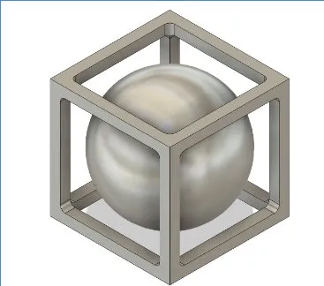
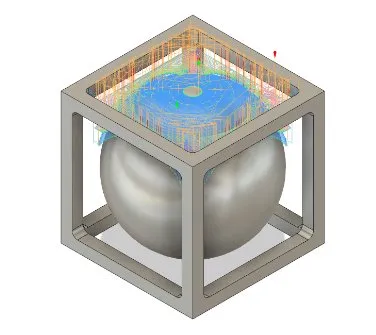

Ball In The Box
CTE Engineering Pathway: Pacific Grove High School
My Role
I did the CAD and CAM in Fusion 360 and machined this on a Tormach 1100MX CNC mill.



I used an endmill for roughing and a ball-end mill for the spherical faces. The feeds were too aggressive for the aluminum, so I switched to plywood.
What happened
- Splintering on some faces from the wood grain
- I'd try a different vise setup to hold the part more securely